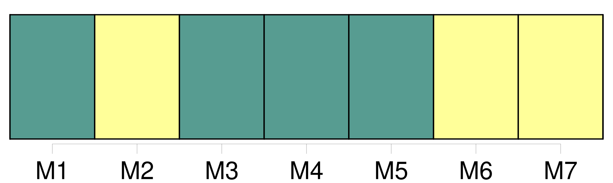
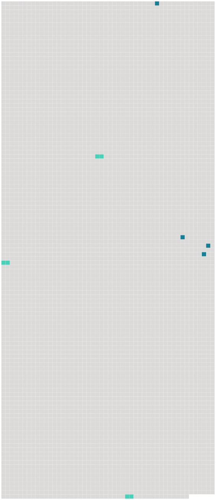

Longueur nb maillons : 7 mentions |
 |
Il sera donné au passager un avis écrit indiquant que, lorsque la présente convention s'applique, elle régit la responsabilité des transporteurs en cas de mort ou de lésion ainsi qu'en cas de [destruction] , de perte ou d'avarie des bagages, ou de retard. [61 phrases] Le transporteur est responsable du dommage survenu en cas de destruction, perte ou avarie de bagages enregistrés, par cela seul que le fait qui a causé [la destruction] , la perte ou l'avarie s'est produit à bord de l'aéronef ou au cours de toute période durant laquelle le transporteur avait la garde des bagages enregistrés. [28 phrases] Dans le transport de bagages, la responsabilité du transporteur en cas de [destruction] , perte, avarie ou retard est limitée à la somme de 1000 droits de tirage spéciaux par passager, sauf déclaration spéciale d'intérêt à la livraison faite par le passager au moment de la remise des bagages enregistrés au transporteur et moyennant le paiement éventuel d'une somme supplémentaire. [2 phrases] Dans le transport de marchandises, la responsabilité du transporteur, en cas de [destruction] , de perte, d'avarie ou de retard, est limitée à la somme de 17 droits de tirage spéciaux par kilogramme, sauf déclaration spéciale d'intérêt à la livraison faite par l'expéditeur au moment de la remise du colis au transporteur et moyennant le paiement d'une somme supplémentaire éventuelle. [2 phrases] En cas de [destruction] , de perte, d'avarie ou de retard d'une partie des marchandises, ou de tout objet qui y est contenu, seul le poids total du ou des colis dont il s'agit est pris en considération pour déterminer la limite de responsabilité du transporteur.
Toutefois, lorsque [la destruction] , la perte, l'avarie ou le retard d'une partie des marchandises, ou d'un objet qui y est contenu, affecte la valeur d'autres colis couverts par la même lettre de transport aérien ou par le même récépissé ou, en l'absence de ces documents, par les mêmes indications consignées par les autres moyens visés à l'article 4, paragraphe 2, le poids total de ces colis doit être pris en considération pour déterminer la limite de responsabilité. [79 phrases] S'il s'agit de bagages ou de marchandises, le passager ou l'expéditeur aura recours contre le premier transporteur, et le destinataire ou le passager qui a le droit à la délivrance contre le dernier, et l'un et l'autre pourront, en outre, agir contre le transporteur ayant effectué le transport au cours duquel [la destruction] , la perte, l'avarie ou le retard se sont produits. |
 |
Il est possible de télécharger la ressource sur la page Ortolang |
Si vous avez des questions ou vous voyez des erreurs, merci d'envoyer un mail à silvia.federzoni89@gmail.com |